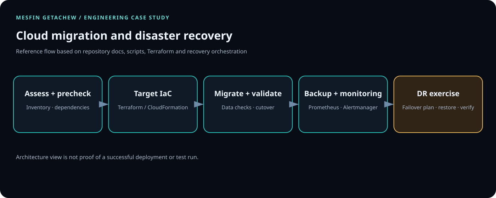

Controlled access
Apply least privilege, protect credentials, scan artifacts and require appropriate review gates.
AWS · Azure · Terraform · Ansible · DR
Migration and recovery planning across AWS and Azure using IaC and automation.

01 / PROBLEM
Migration is not complete when workloads have simply moved. Infrastructure, configuration, recovery procedures and operational ownership need to be reproducible and tested.
02 / SYSTEM FLOW
Assessment → target architecture → IaC/configuration → backup or replication → runbooks → recovery validation
03 / PRODUCTION CONSIDERATIONS
Apply least privilege, protect credentials, scan artifacts and require appropriate review gates.
Plan for failure, observable runtime behavior, rollback or recovery and tested runbooks.
Keep configuration versioned, modular and documented.
ARCHITECTURE / MIGRATION + RECOVERY
The source repository includes migration prechecks, data-validation and cutover scripts, Terraform directories, a recovery pipeline, a failover test plan, and Prometheus/Alertmanager configuration.

Inventory dependencies, verify prerequisites, validate transferred data, and use explicit cutover/rollback criteria.
Use documented recovery plans and distinguish backup existence from successful restore and application recovery.
Measure actual recovery time and data loss in drills before asserting RTO/RPO achievement.
git clone https://github.com/DataOpsInnovator/cloud-migration-disaster-recovery.git cd cloud-migration-disaster-recovery bash -n migration/scripts/*.sh scripts/*.sh terraform fmt -check -recursive
These are static syntax/format checks only. Review the documented prerequisites and inspect each Terraform module before initializing it. Execute backup, restore, cutover, or failover scripts only in a disposable environment with explicit safeguards. Capture command outputs, tool versions, redacted plans, restore verification and measured RTO/RPO from actual drills.
04 / ENGINEERING VALUE
Add measurable outcomes only when substantiated. No cost or performance figures have been invented for this case study.